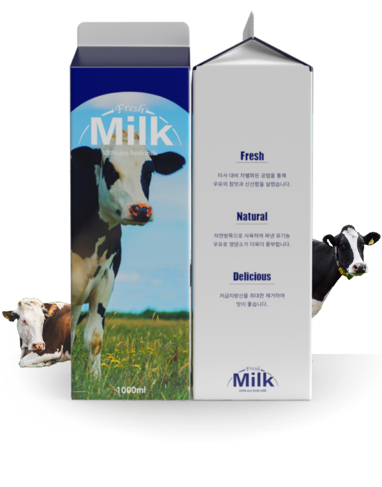

PACKAGE DESIGN PROJECT

깨끗한 산간 초지에서 방목한
건강한 젖소의 우유 패키지를 제작하였습니다.
건강한 젖소의 우유 패키지를 제작하였습니다.

100% eco Fresh Milk의 패키지 디자인 프로젝트를
진행하였습니다. Fresh, Natural, Delicious 정보를 효과적으로
전달하기 위해 타이포로만 표현하였습니다. 이미지, 그래픽요소를 사용하여
신선함과 건강함이 전달 될 수 있도록 고려하여 제작하였습니다.
‘Milk’ 제목에는 Arial Black : Regular를 사용하여 명확성을
표현하였으며, ‘Fresh’에는 Apple Chancery : Chancery를 사용하여
고전적이지만 장식적인 느낌을 표현하여 재미있는 제목으로 연출하도록 구성
하였습니다. 본문 글꼴은 가독성을 고려하여 Spoqa Han Sans Neo :
Medium를 중심으로 세부적이지만 정보를 정확하게 전달 할 수 있도록
하는 패키지로 제작하였습니다.
컬러시스템을 구성하는 것에 대해 신선함을 기준으로 잡았습니다.
종이가 갖는 기본 컬러인 White와 메인컬러인 블루를
조합하여 신선함이 보이도록 구성하였습니다.